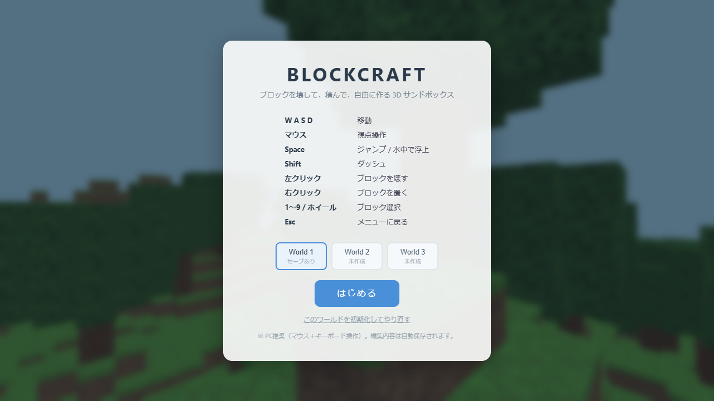
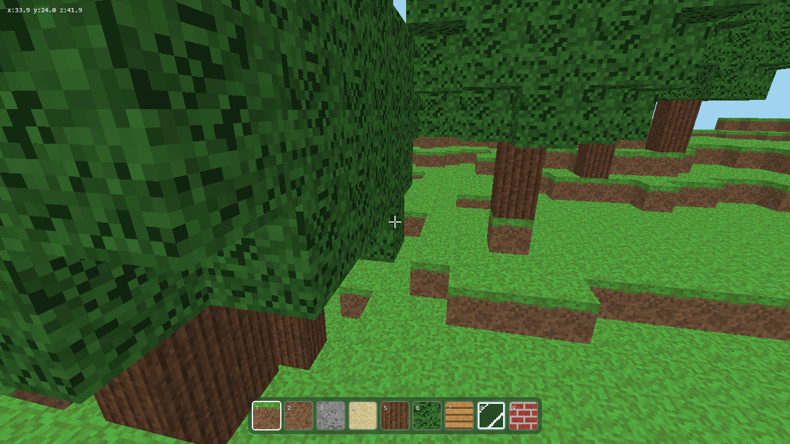
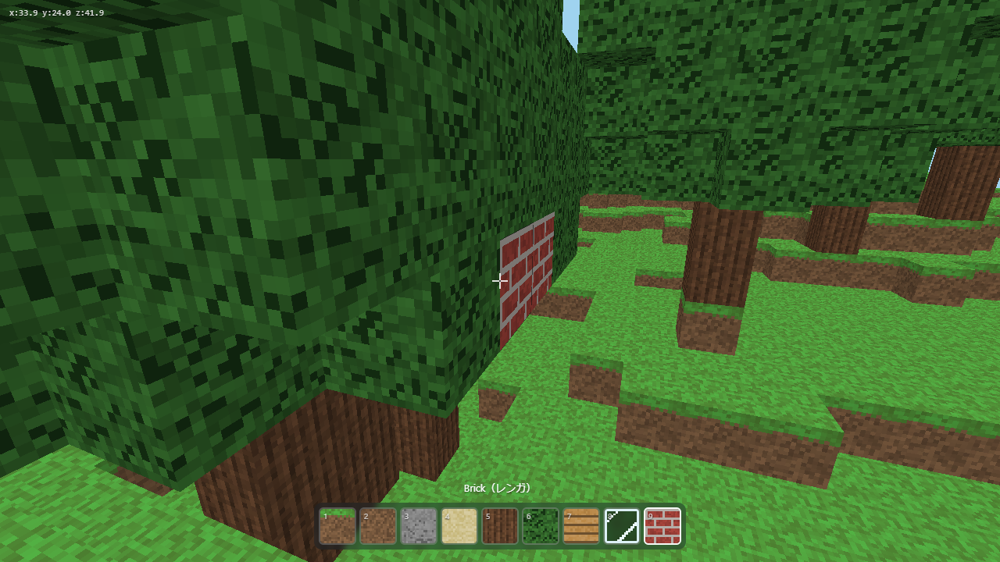

ブロックでできた3Dの世界を歩き回って、ブロックを壊したり、積み上げたりして自由に遊ぶゲームです。敵もゴールもありません。散歩するだけでもOK、家を建てるのもOK。正解のない砂場（サンドボックス）です。

操作は「左手はキーボード、右手はマウス」が基本スタイルです。

| 場所 | なに？ |
|---|---|
| 画面まんなかの「＋」 | 照準（クロスヘア）。ここに映っているブロックが操作の対象 |
| ブロックの黒い枠 | いま狙っているブロック。「ここを壊す／ここに置く」の目印 |
| 画面下の9マス | ホットバー。置けるブロックの一覧（白枠が選択中） |
| 左上の数字 | いまいる場所の座標。迷子になったときの目印に |

置くブロックは、ホイールのほかに数字キー 1〜9 でも選べます。
| 番号 | ブロック | 説明 |
|---|---|---|
| 1 | Grass（草ブロック） | 地面と同じ緑のブロック |
| 2 | Dirt（土） | 茶色い土 |
| 3 | Stone（石） | グレーの石。お城っぽい建物に |
| 4 | Sand（砂） | 砂浜の砂 |
| 5 | Wood（原木） | 木の幹。柱にぴったり |
| 6 | Leaves（葉） | 木の葉っぱ。庭木や生け垣に |
| 7 | Plank（板材） | 木の板。家の壁や床の定番 |
| 8 | Glass（ガラス） | 向こうが透けて見える。窓に |
| 9 | Brick（レンガ） | 赤いレンガ。おしゃれな壁に |
壊したり置いたりした内容は自動でセーブされます。ブラウザを閉じても、次に開いたときに続きから遊べます。
ワールドは World 1〜3 の3つ。スタート画面のボタンで切り替えられ、それぞれ別の地形・別のセーブです。「建築の練習用」「本気の家づくり用」のように使い分けできます。
| こまった | 解決方法 |
|---|---|
| マウスカーソルが消えた | 正常です（視点操作モード）。Esc でカーソルが戻ります |
| クリックしても何も起きない | メニュー画面に戻っています。「はじめる」を押し直してください |
| 穴に落ちて出られない | まわりの壁を左クリックで壊すか、足元にブロックを置いて（真下を見て右クリック→ジャンプ）積み上がって脱出 |
| 高いところから落ちた | ダメージはないので大丈夫。世界の外に落ちても自動で戻されます |
| 迷子になった | 左上の座標が「x:40 z:40」付近がスタート地点。数字が近づく方向に歩けば戻れます |
| ぜんぶやり直したい | Esc → 「このワールドを初期化してやり直す」 |